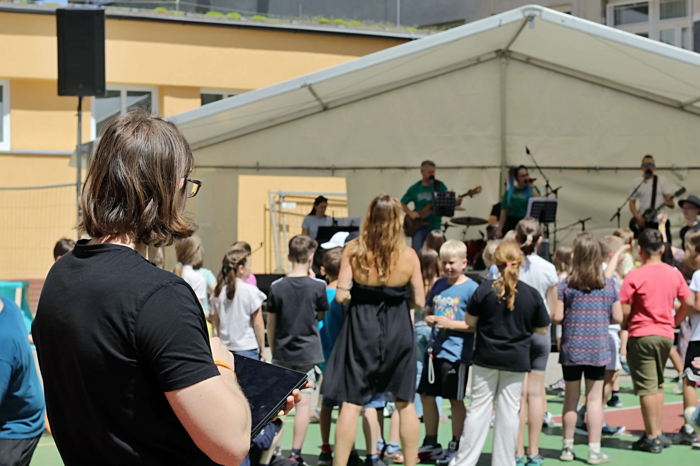
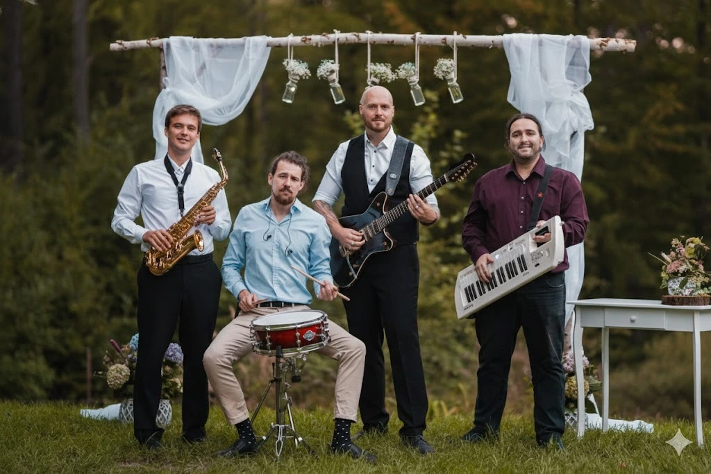
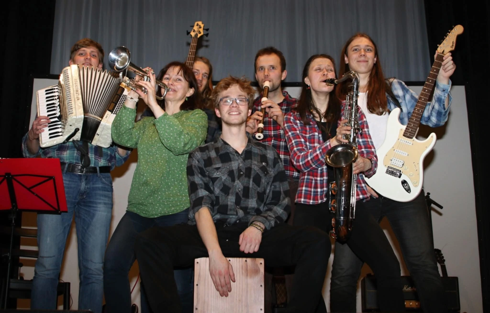
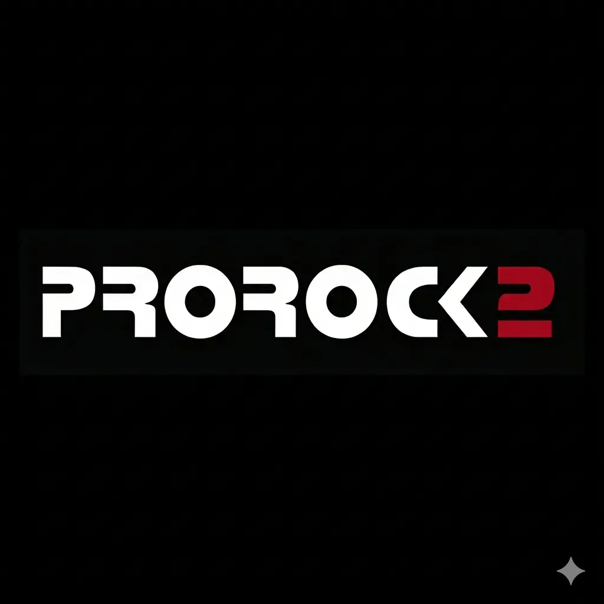
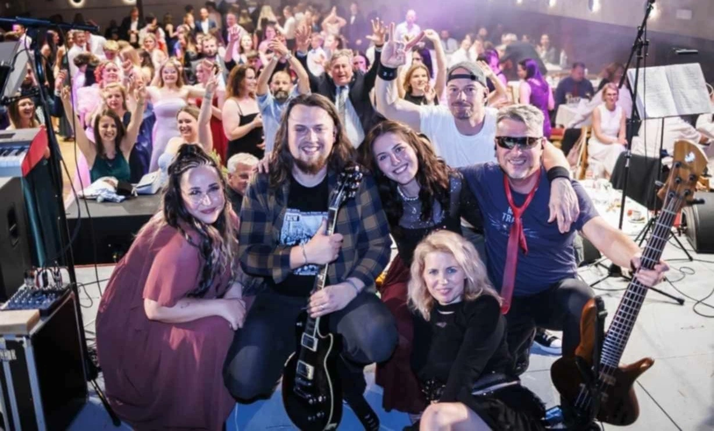
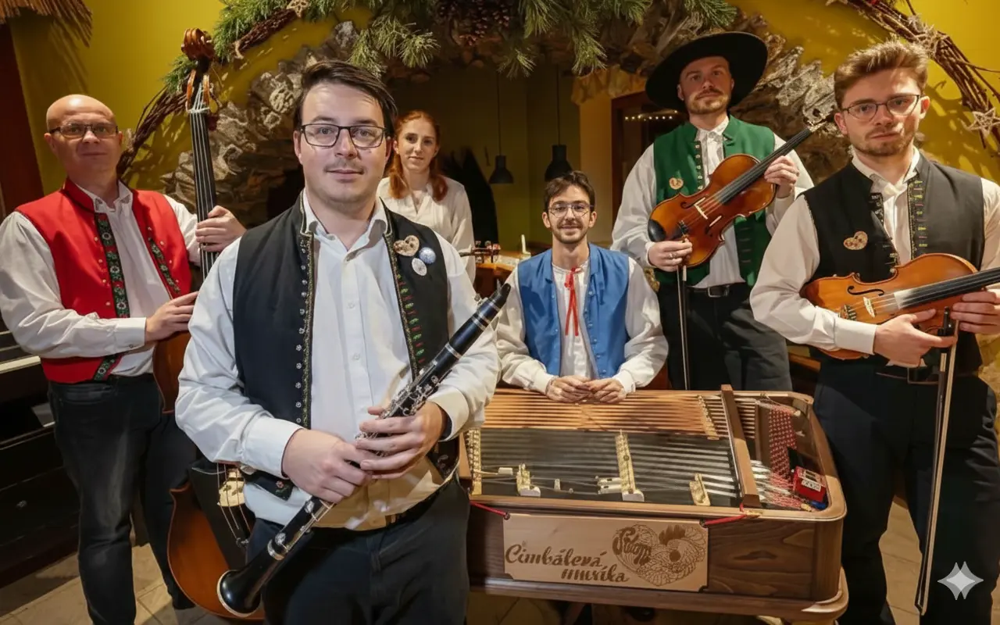
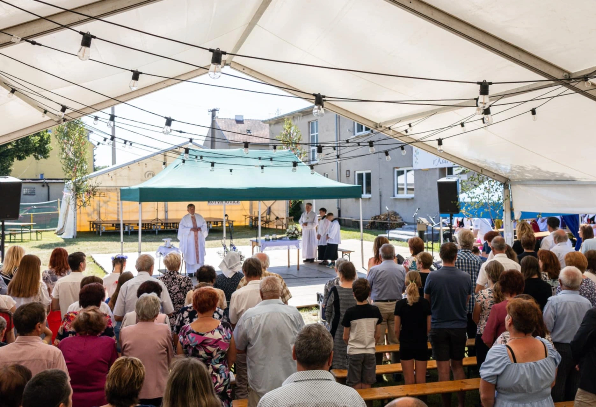

📍 Blansko • Brno • Boskovice
David Zukal
Jmenuji se David Zukal a zajišťuji kvalitní ozvučení a osvětlení pro Vaše akce. Jako aktivní muzikant vnímám potřeby vystupujících a snažím se vždy préparovat co nejlepší zvuk nejen pro obecenstvo, ale i pro hudebníky - jen díky tomu mohou podat ten nejlepší výkon. Jedním z mých hlavních cílů je vytvořit příjemný neagresivní zvuk, po kterém další den nebude všem pískat v uších.
Působím především v lokalitách Blansko, Brno, Boskovice a Jedovnice, ale po domluvě za vámi přijedu kamkoliv. Zakládám si na spolehlivosti, špičkové technice a osobním přístupu ke každému projektu.
Pojďme se domluvitZakládám si na profesionální technice, která vždy zajistí kvalitní zvuk a v půlce akce nevypoví službu. Díky vlastní aparatuře dokážu nabídnout příznivější ceny, než kdybych ji musel pokaždé pronajímat. Samozřejmě ale není problém v případě nutnosti další techniku dovypůjčit. Snažím se být vždy maximálně flexibilní a nenutit přehnaně silnou aparaturu na komorní akce. S vlastní aparaturou dokážu nabídnout PA o výkonu až 15 kW a až 7 podlahových odposlechů.

Kompletní zvukové a technické zajištění festivalu u příležitosti oslavy výročí založení ZŠ Gajdošova v Brně. Ozvučení hlavního programu, živých vystoupení a proslovů, zajištění podia a stanu.

Pravidelná spolupráce v plesové sezóně 2025/2026, ozvučení kapely, osvětlení, zvukové zajištění kulturních vystoupení v rámci plesů.

Kapela, ve které sám účinkuji jako kytarista, zároveň zajišťuji technickou stránku našich vystoupení.

Občasná spolupráce - zajištění zvuku pro taneční zábavy, plesy a večírky.

Ozvučení vystoupení rockové kapely ŠOK v rámci plesů a večírků.

Ozvučení cimbálové muziky Srdcem v rámci Rudických Hodů 2025.

Ozvučení scholy, mše a dětských vystoupení v rámci nedělního programu 2025.
| Typ akce | Vybavení | Cena od |
|---|---|---|
| Mluvené slovo / Jednotlivec | menší PA, odposlech | 5 000 Kč |
| Kapela – pravidelná spolupráce | PA, micing, monitoring | 5 000 Kč |
| Koncert | velké PA, micing, monitoring | 8 000 Kč |
| Kompletní akce / Více vystoupení | velké PA, micing, monitoring | 10 000 Kč |
| Osvětlení (k ozvučení) | barevné podsvícení pódia | 500 Kč |
* Uvedené ceny jsou pouze orientační. Výsledná kalkulace vždy závisí na konkrétních požadavcích.